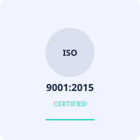
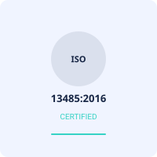

ISO 9001:2015
Omex Medical Technology is ISO 9001:2015 accredited in the disposable Medical Devices quality standard. ISO 9001 specifies the standards for our organization's Quality Management System to Design, Manufacture, and Deliver medical devices that satisfy customer, statutory, and regulatory requirements. The standard also lays out a structure for evaluating customer perception and making changes.
View our certificate
WHO - GMP
Omex Medical Technology meets the WHO-GMP quality standard for disposable medical devices. We can assure that our products are consistently manufactured and regulated, in accordance with quality standards relevant to their intended use and as specified in the product specification, by holding this certificate. We guarantee that the procedures required for manufacturing and testing are properly defined, verified, evaluated, and recorded, as well as that the staff, facilities, and materials are acceptable for medical device manufacture.
View our certificate
CE 3375
Omex Medical Technology is CE-3375 approved for disposable medical devices. The CE mark signifies that our product complies with EU health, safety, and environmental protection requirements. It means that the product may be sold freely in any region of the European Economic Area, regardless of where it was manufactured.
View our certificate

ISO 13485:2016
Omex Medical Technology is ISO 13485:2016 certified for disposable medical devices. We use competent and efficient quality management methods to assure consistent quality, product safety, and the long-term success of our products. As a result, you can assured that our product will fulfil all applicable regulatory standards across the world.
View our certificate